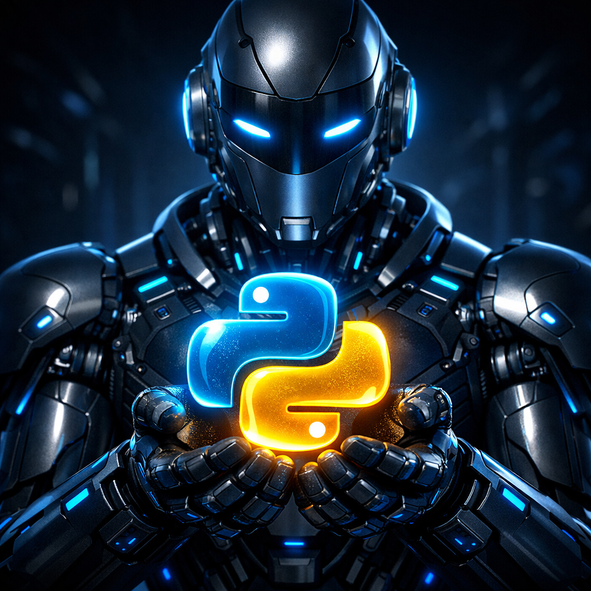
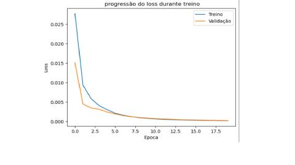

Guilherme Souza
Sobre Mim
"Sou Desenvolvedor de Soluções Baseadas em Dados. Minha missão é transformar dados brutos,
desorganizados e complexos em soluções limpas, automatizadas e prontas para gerar valor.
Atuo no desenvolvimento de projetos envolvendo ETL (Extração, Transformação e Carga),
automação de processos, Web Scraping e integração de sistemas via APIs, criando fluxos capazes de coletar,
organizar e transformar informações de forma eficiente.
Utilizando tecnologias como Python, Pandas e APIs, desenvolvo desde scripts inteligentes para automatizar
tarefas repetitivas até aplicações com interface gráfica (.exe),permitindo que usuários utilizem soluções
complexas de forma simples e intuitiva.
Se você enfrenta problemas com planilhas lentas, dados desorganizados ou processos manuais que consomem tempo
e produtividade, posso desenvolver uma solução sob medida para automatizar essas tarefas e transformar
informação em resultado.
Vamos conversar?
Experiência
Profissional de TI em transição de carreira, Bacharel em Sistemas de Informação
com foco em desenvolvimento de soluções baseadas em dados,
automação e inteligência artificial.
Ao longo da minha trajetória tenho trabalhado em projetos práticos envolvendo Python, Machine Learning,
ETL, Web Scraping, Dashboards e Sistemas de Automação para negócios.
Atualmente desenvolvo projetos próprios que unem análise de dados, automação e integração de sistemas
via APIs, buscando sempre aplicar tecnologia para resolver problemas reais.
Projetos em Destaque

Robô de ETL - INSS
Web Scraping Automatizado

Data Cleaning com Pandas
Dashboard Power BI
